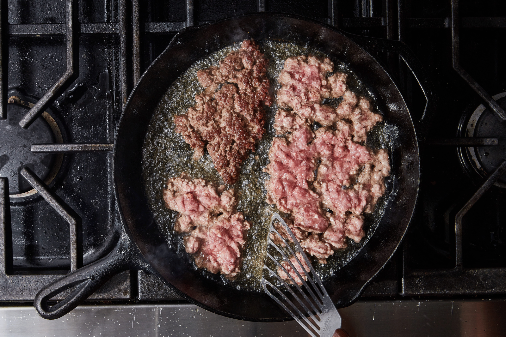
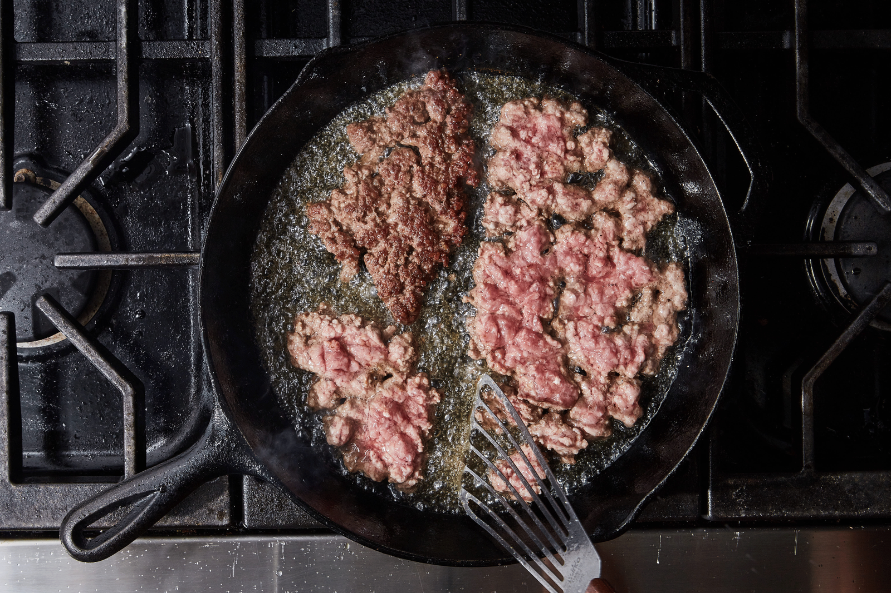
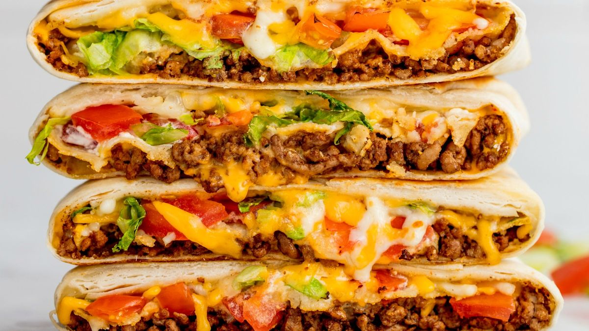

Mapo Tofu
Chinese Source: Own recipe Category: Main Dish
Need something smooth and spicy? Mapo Tofu is a simple tofu dish from Sichuan China. It's great over rice and easy to prep/save for college students! This recipe is for people who want to try authentic Chinese food but do not have Sichuan spices to use.
Ingredients
- 1 pack silken tofu
- 2 green onions, thinly sliced
- 1/2 lb ground pork
- 1 pack mapo tofu sauce (store bought)
- 3 cloves minced garlic
- Soy sauce to taste
- 2 tbsp cooking oil
Steps
- Brown pork in wok with oil for 4-5 minutes
- Add sauce and garlic, stir fry for 2 minutes
- Add tofu and mix lightly as to not break up the tofu too much, until heated through
- Add soy sauce, green onion and dish up
Additional Photos
 


Double Chocolate Cookies
Origin: Michigan Source: Family Recipe Category: Dessert
My daughter learned to make these cookies at a baking camp at Zingermanns and has tweaked the recipe to fit the taste buds of her siblings. They are extremely sugary so the salt helps to balance it. Note, these cookies are best eaten very quickly.
Recipe Ingredients
- Unsalted butter
- Granulated Sugar
- Packed light or dark brown sugar
- Large egg
- Pure vanilla extract
- Semi-sweet chocolate chunks (melted)
- All-purpose flour
- Natural unsweetened cocoa powder
- Baking soda
- Salt
- Semi-sweet chocolate chunks
Recipe Steps
- In a mixing bowl cream together the butter, granulated sugar, and brown sugar
- Add the egg and vanilla extract and beat well
- Add the melted chocolate
- In a separate bowl combine the flour, baking soda, cocoa powder and salt
- Combine the wet and dry ingredients
- Add the unmelted chocolate chunks.
- Form 15 cookies and place on a baking sheet.
- Cook for 12 to 13 minutes at 350 degrees.
Additional Food images


Crunchwrap Supreme
Origin: Taco Bell (Fake Mexican) Source: Taco Bell Website Category: Comfort Dish Despite the noticeable price increase attributed to inflation, I'm an avid Taco Bell fan. There's an undeniable satisfaction in indulging in a Crunchwrap Supreme whenever hunger strikes. Fusing a traditional Mexican taco with a generously sized flattened burrito creates a symphony of flavors that resonates perfectly with my taste buds. The mere thought of it sets my stomach on a journey of anticipation, as each bite combines the comforting essence of familiar ingredients in a novel and exciting way. Yo quiero Taco Bell.
Recipe Ingredients
- Tortilla
- Ground Beef
- Circular taco shell
- Cheese
- Lettuce
- Sour Cream
- Melted Cheese
- Diced Tomatoes
- Taco Bell seasoning
- Cheese sauce
Recipe Steps
- Make the ground beef with taco seasoning, season it well with spices and Taco Bell spices from Target
- Lay the tortilla on the grill and put cheese sauce on top of it, smooth it out in a circular motion, and be generous with the amount
- Next, put the circular crunch taco shell on top of it while adding a generous amount of sour cream on it, don't be shy!
- Next add your seasoned to ground beef onto the tortilla
- Finally, add your diced tomatoes, lettuce, and cheese.
- Wrap your Crunchwrap pentagon style and then grill it on a hot pan for about 4 minutes on medium heat, both sides
- Take it off the pan and then cut it in half and you have your Crunchwrap supreme

Cook the beef on high heat while adding Taco Bell seasoning and let it simmer for 10 minutes on low

Example of the assembled Crunchwrap supreme with toppings on the tortilla
Finished product of a Crunchwrap